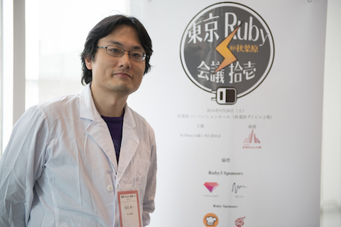
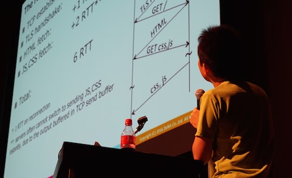
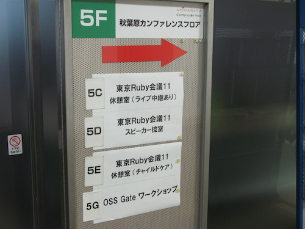
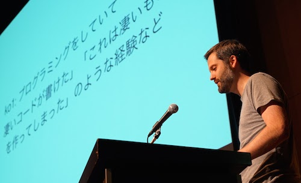
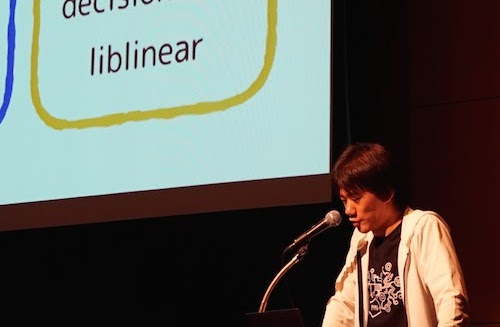
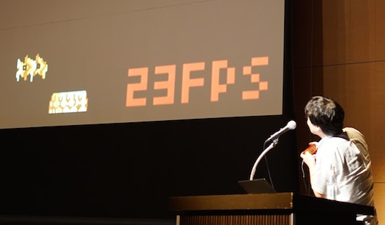
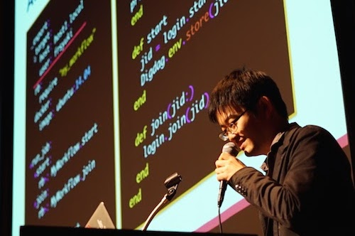
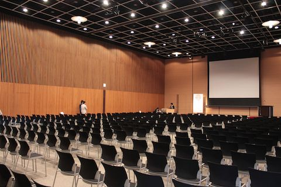

RegionalRubyKaigi レポート (58) 東京 Ruby 会議 11
開催概要

- 開催日
- 2016/5/28 (土)
- 開催場所
- 秋葉原コンベンションホール 2F
- 主催
- 東京 Ruby 会議 11 実行委員会
- 公式ページ
- http://regional.rubykaigi.org/tokyo11/
- 公式ハッシュタグ
- #tkrk11
目次
- 開催概要
- 目次
- はじめに
- 午前セッション
- ランチ
- 午後セッション 1
- 休憩 - OSS Gate について
- 午後セッション 2
- 休憩 - Speaker’s award
- 午後セッション 3
- まとめ
- 執筆者

はじめに
 実行委員長の笹田さんが白衣で登壇して、東京 Ruby 会議 11 が始まりました。ロビーには書籍の展示やコーヒーがあり、いろいろなポスターが掲示されています。コンベンションホールには 2 列の通路ができるように椅子が並んでいます。それぞれの通路の前の方にはマイクスタンドとマイク1。
「秋葉原ダイビル、『Steins;Gate』で何かを隠しておいたロッカーの向こうにあるビルなんですけど、ロッカーは撤去されてしまいました。そんなわけで白衣2でまいりました。」とのこと。地域 Ruby 会議は「テーマ性を持ってやりたい人がやる」というわけで、東京 Ruby 会議 11 では「血湧き肉躍るハックの話をしてください。質疑応答は前方のマイクで。意見を戦わせましょう。」
午前セッション
Streem - まつもとゆきひろさん
皆さんご存知の Ruby 開発者であり、プログラマーであり、言語デザイナーであり、日経 Linux ライターである Matz は、「Ruby の話はしない」というオファーで登壇されたようで新しいプログラミング言語「Streem」についてお話されました。 言語デザイナーとは、「言語のデザインと実装を行う人」であり、本職でやっている人は殆どいないながらもとても興味深い職業だと言っています。
Streem の目指す方向としては、「汎用言語を目指さない」。Ruby の発展の邪魔もしたくないし、Ruby を諦めたとも思われたくないという意図からそのようなポジションとしてのプログラミング言語の開発を考えたとのことです。 また、1993 年に Ruby を作り始めてからの 20 年間の経験を経て、Streem は関数型言語にしたそうです。
今回、Matz が Streem の話をしたのには、より多くの開発者に対して、自作言語の世界を体験してもっとプログラミングを楽しんで貰いたいという彼の想いがありました。 UI や API デザインの原則やデータ構造、アルゴリズムを知る良い機会になりますし、何よりも楽しい。
是非、みなさんも自作の言語を作ってみてはいかがでしょうか？
なお、Streem については、日経 Linux「まつもとゆきひろの作りながら学ぶプログラミング言語」で連載しております。

mruby/c - 田中 和明さん
九州工業大学で組込みソフトウェアの研究を行っている田中和明さんは、OSS 版の mruby よりも小さな資源で動作する mruby/c について紹介されました。
軽量版の Ruby である mruby はすでに存在し、例えばシングルボードコンピュータである Rasberry Pi 上などでも動作します。しかし田中さんは、より小さいマイコンの環境下で Ruby を動かすために mruby/c の研究・開発を行っています。
mruby/c においては3つの重要な技術的要素があります。1つ目は GC についてです。mruby/c は実装・動作を簡略化するため、GC をもたないという選択をしました。これは、mruby/c が動作する環境は小さいプログラム・短いスパンを想定しているためです。
2つ目は Concurrency についてです。GC をもたないとはいえ、継続してデータを保持しなければいけないアプリケーションもあるでしょう。そのために mruby/c では複数のプログラムを動かせる仕組みを VM 自体がもちます。この VM 上にプログラム間の共有オブジェクトを保存することで、データを継続して利用することが可能です。
3つ目は Boot についてです。組み込みシステムでは Boot 処理が大切です。というのも、mruby/c は IoT の文脈等で動くことを想定しており、システムが動作すべきタイミングで即座に処理ができないといけません。そこで Boot 処理は非常に短くある必要があります。
mruby/c は絶賛開発中であり、まだ多くのクラスやメソッドが実装されていません。しかし mruby が動作しない環境で動作するなど利点も多くあり、協力者を募集しているとのことでした。mruby、mruby/c 共に OSS として公開されていますので、興味がある方は是非ご覧ください。 
Rubyに型があると便利か - 栗原 勇樹さん
mruby 関連で RubyKaja 2014 に選ばれた栗原さんからは、型についていろんな議論がもりあがればいいな、ということで、Ruby での型についての紹介がありました。型については、『型システム入門 −プログラミング言語と型の理論− 』という、これを読んでいない奴はモグリと言われる本がありますが、「難しくてよくわからなかった」。「入門の入門の入門があればな」だそうです。
』という、これを読んでいない奴はモグリと言われる本がありますが、「難しくてよくわからなかった」。「入門の入門の入門があればな」だそうです。
型と言ってもいろいろありますが、ここでは Ruby で class チェックをすることを考えます。
String === "Hello" #=> true
String === 123 #=> false
String === nil #=> falseこれまでの実装例はいくつかあります45が、今回は Struct を拡張したものを作りました6。値が入る時や変わる時だけ class チェックをして、合わなければエラーをくれます。つくったけど、実は、使いませんでした。
そのまま時間はたち、次の問題。JSONを扱うのが面倒。 [] も fetch(“”) もみづらい。タイポがこわい。どういうメソッドが使えるのかわからない。nil はありえるのかどうかわからない。「もーむりっす。」Go 言語や Crystal では、JSON を扱えるライブラリがあります。それを眺めてみると、TypeStruct を拡張してチェックができることがわかりました。安心感があります。
| しかしいくつかの問題点がありました。「冒険のはじまりです。」ここからの講演は、Go と Crystal での表現と比較しながら RPG 風に進んでいきました。最初の敵 Array があらわれた! 要素の型はどうやって書く？→ArrayOf(Type)。次の敵 Hash があらわれた! キーと値の型はどうやって書く？→HashOf(Type, Type)。次の敵 Boolean と Null があらわれた! Ruby では True と False クラスしかない。いろいろな型の要素を持った配列もあらわれた!「しんでしまいます」。ここで救世主 Union があらわれました。Unicon という小さいクラスをつくり、ちょうまほう Refinements を使うと、Class# | を定義すると複数のクラスのいずれかのクラスなら可能という表現ができるようになります。ラスボス DuckTyping があらわれた。メソッドの有無を === 演算子で比較できる Interface というクラスを作りました。 |
というわけで、TypeStruct を作りました。JSON を当てはめることができます。作りも単純なので導入もしやすいです。ドキュメントとしてもわかりやすく、プルリクエストでも型の変更を議論しやすくなります。複数人での開発向きです。
なお、Ruby 3 の型78は、今回の発表のものとは違います。静的チェックがあります。Ruby レベルでは、Annotation を書きません。C では、Annotation を書きます。たいへんそう。
講演後の質疑応答。まつもとさん何かコメントはありませんか？という問いかけにたいして、「こういうのが便利な時もあるとは思いますが、型は絶対書きたくないでござる。」とコメントされていました。「型がいやとか嫌いなわけではなく、書きたくないのです。」とのことでした。

ランチ
 ここまでの講演を聴いて、お昼の休憩時間となりました。休憩中に、ロビーに展示されていたポスターのうち技術的な内容のものを順不同で紹介しておきましょう。
ここまでの講演を聴いて、お昼の休憩時間となりました。休憩中に、ロビーに展示されていたポスターのうち技術的な内容のものを順不同で紹介しておきましょう。
- 「CRuby 組込ライブラリ Rational の最適化9」
- 「mruby/c - Ruby for small devices10」
- 「RICOH THETA の全天球写真でペーパークラフト作成11」
「Ruby 開発協賛各社御紹介」のポスターもありました。「Ruby の開発に際して多くの企業様から多岐にわたるご支援をいただいております。これらのご支援がなければ私達の活動は成し得ません。この場を借りて篤く感謝いたします。」とのこと。ありがとうございます。
いっぽう、「Sciruby-jp プロジェクト (協力者募集中)12」とのお知らせもありました。興味のある方は覗いてみてください。
午後セッション 1
最速ウェブサーバの作り方 - 奥一穂さん
未踏ソフト認定の天才プログラマーであり、HTTP/2 サーバ「H2O」の開発を行っている奥さんからは、HTTP/2 が必要になった理由からタイトルにもあるような最速ウェブサーバの作り方とその仕組みについてお話を頂きました。
まず、HTTP/2 が必要になった理由です。 Yahoo や Google (……プレゼンでは Google の資料でした) などの発表している資料で、「レスポンス速度が 500 ms 落ちると、売上が 1.2 % 下がる」という事実があります。昨今のインターネット通信では、通信されるファイルの数もそのデータ総量も増加傾向にあります。それに対応するかのようにバンド幅も増えていますが、バンド幅そのものは web ページの表示速度には影響がなく、レイテンシーが大きくなってしまうために web ページの表示速度が遅くなる傾向にあります。 先の資料で示されたように、このままではレスポンス速度の低下に伴い、売上も下がってしまいます。 その対応策として出てきた考えが HTTP/2 になります。
次に HTTP/2 とは何なのでしょうか？ その前に HTTP/1 について知っておく必要があります。前述のような問題が生じているのは HTTP/1 の持つ 3 つの問題点があります。
- 並走性が低い (パイプラインの機能はあるが、実装しにくい)
- リクエストに優先順位をつけられない
- リクエストヘッダー、レスポンスヘッダーのデータ量が大きすぎる
それらを解決することで、最速のウェブサーバーが作れる可能性があります。 理論値を計算すると、一回の通信で最低 6 RTT13 かかります。それを 1 RTT におさめることができれば格段に表示速度が上がります。
その実現方法として 2 つの最適化の例を挙げられました。 一つ目は poll threshold の設定をして通信効率を上げること、二つ目は、server-push という機能を使って機能を使ってサーバー側でのプロセッシング中に先に JS および CSS を返すようにすることです。 詳しくは発表資料や動画を御覧ください。 
アプリケーションへの Ruby インタープリターの組み込み - 須藤功平さん
須藤さんの、「自分のアプリに Ruby インタープリターを組み込んだことある人」という質問から始まった講演。「10 人いないくらいですね。」Speaker’s award と OSS Gate の紹介もしてくださいました。「地味でもいいのでこつこつ継続的にやっていきましょう」とのことでした。
この講演は、C で書かれたアプリケーションに Ruby インタプリタを組み込むことについての知見です。なぜインタプリタを組み込むのか。C では書きにくい複雑・柔軟な処理を書きたい。でも、C の速さはほしい。Ruby 以外の言語とも連携したい。あとは、かっこいい。逆に、拡張ライブラリは Ruby が起動されて、そこで C のコードも走ります。どちらが良いかというと、基本は拡張ライブラリーにするのが良いです。既にアプリがあるなら組み込み。本人の強い意志があれば組み込み。しかし、利用例が少ないので軽い気持ちで組み込むとつらいです。問題に遭遇した場合には、オープンソースなので、ソース読んで調べましょう。須藤さんとか笹田さんとかに相談するのも良さそうです。「なんか mruby に負けたくないんですって、笹田さんは。」
メールフィルターをとりまとめるネットワークサーバー milter manager に Ruby インタプリタを組み込んでみます。
まず、初期化します。最初に RUBY_INIT_STACK。GC のためにスタックの端を設定します。C でのスコープに注意が必要です。次に ruby_init()。シグナル関連の初期化をします。アプリケーション側で設定したハンドラは退避しておいて、この関数を読んでから復帰させましょう。初期化はこれでは終わりません。ruby_process_options(argc, argv)。これで Ruby のコードが走り始めるのですが、アプリケーションに組み込む場合にはコードが走ってアプリケーション側がブロックしてしまっては困るので、空のコードを渡すのがセオリーなようです。例外はアプリケーション側のコードで受け止めましょう。
複数のプログラミング言語に対応するには、アプリケーションは、起動中に dlopen() で言語の共有ライブラリを読み込むことになります。が、Ruby では dlopen() の前に RUBY_INIT_STACK する必要があるので、そのために言語専用のコードを持つことになってしまいます。動的に複数の言語のインタプリタを読み込むのはやめて、アプリケーションのリンク時に、言語のライブラリもリンクしてしまった方がよかったです。
Milter manager は数十万人規模のユーザーが居るサービスでも使われているので、それなりの性能が必要です。CPU がボトルネックになっているなら、組み込んだ Ruby はマスタープロセスとワーカープロセスで動かすことで性能を向上させます。しかし、いつもの気持ちで fork() を呼ぶと、ワーカープロセスがクラッシュしてしまいました。Ruby ではタイマースレッドを走らせていますが、fork() した子ではシングルスレッドになって他のスレッドが見えなくなってしまうからです。Ruby の fork を使いましょう。
イベントループとシグナルは気にしなくていいです。シグナルはアプリケーション側で処理するので、Ruby 側では気にする必要はありません。
次に、全文検索エンジン Groonga への mruby の組み込みについて。Groonga は高速に安定して検索結果を返したいので、メモリ等リソース消費には波がないほうがいいのですが、mruby で GC が走るたびに上下してしまいます。
Groonga では、mruby にリソース管理を任せないようにしました。現状では、mruby の GC にまかせず、Ruby レベルの ensure や file.close でリソースを解放しています。また、C レベルで確保したリソースは C レベルで管理するようにしています。mruby に GC を任せるには、アプリケーションでのメモリ確保量を知らせてあげたいのです。「誰か相談させてください。」
講演後の質疑応答では RUBY_INIT_STACK を呼ぶタイミングや、複数言語のインタプリタの読み込みについて活発な議論が交わされました。複数言語のインタプリタを同時に動かせたら「かっこいいでしょう？」「ひとことで Ruby を使うと言ってもいろんな使い方があるということですね。」という笹田さんの一言で、次の講演に進みました。というわけで、質疑応答のていねいな補足が、東京 Ruby 会議 11 での発表「アプリケーションへの Ruby インタープリターの組み込み」と OSS Gate ワークショップ 2016-05-28 #tkrk11 #oss_gate - ククログ(2016-06-01) に掲載されています。ぜひご覧ください。

Re: Pattern Matching in Ruby - 辻本 和樹さん
Ruby コミッタである辻本和樹さんは、札幌 Ruby 会議 2012 で pattern-match.gem の機能について紹介しました。「Re: Pattern Matching in Ruby」と称した今回の発表では、pattern-match.gem の概要に加え、札幌 Ruby 会議 2012 では話せなかった実装方法についての話を紹介されました。
パターンマッチとは「多重代入の強化版」だと話す辻本さん。様々な言語で実装されている機能ですがそれぞれ特徴があり、Ruby の pattern-match は Scala, Scheme, Mathematica を参考にして作られています。また一部実験的に、JavaScript の Destructing Assignment (分割代入、配列やオブジェクトから要素を取り出して別個の変数へ代入すること) のような機能なども盛り込んでいます。
設計のポイントとしては、Ruby の言語仕様に取り込むことを考慮し、「proof of concept」となれるように記述方法を定めており、実装の素直さより見た目 (書きやすさ) を優先しています。
マッチ処理は「マッチ用のツリーの構築」、「ツリーとオブジェクトのマッチ」、「マッチ結果の”変数”への代入」という流れで処理されます。本発表ではそれぞれの実装方法をツリーやコードを用いて詳しく紹介しています。例えば「ツリーとオブジェクトのマッチ」では変数を抽出する必要があります。これは with 構文内に出て来た method_missing を捕捉し、これを変数と見なすメタプログラミングを行っています。その他、Refinements をオプショナル機能として採用したことや、「ツリーとオブジェクトのマッチ」で callcc を利用していることなど、実装方法についての詳細が紹介されています。
パターンマッチと一口に言っても様々なバリエーションがあり、どのような形が便利なのかを是非議論して行きたいとのことでした。

休憩 - OSS Gate について
 濃い講演はいったん休憩。
ロビーに出ると須藤さんも参加している OSS Gate の紹介がありました。今日のワークショップは東京 Ruby 会議 11と同じ建物で開催とのこと。「OSS 開発に参加する人を増やす取り組み」、ワークショップは今後も開かれるようです。参加したい！
この他、ライブ中継もある快適な休憩室やチャイルドケアありの休憩室が用意されていたのも、東京 Ruby 会議 11 の特長でしょう。
午後セッション 2
Image Recognition and Code that shouldn’t exist - Aaron Pattersonさん
Aaron さんの、最近新しい会社に入りました14という挨拶から講演は始まりました (拍手) 。笹田さんからの講演依頼に「プログラミングをしていて、おお、凄いコードが書けた、とかこれは凄いものをつくってしまった、とかの経験を発表してください」とあったということで、まずは「凄いって何だろう」というところから講演が始まりました。
「凄い」を辞書でひいてみると、「素晴らしい / 良い」と、「恐ろしい / 怖い」という 2 つの意味が載っていましたので、今日は、それぞれについてと、あと 1 つ、秘密の話題について発表します。
まずは「素晴らしい / 良い」コード。コンピュータビジョンの話。押入れに、妻が捨てて欲しいって言っているガラクタがいっぱいあります。高校大学生時代に 8000 枚以上集まってしまった、Magic the Gathering のカードです。捨てるのもいいけれど、$ 100 以上の価値があるカードもあるかもしれない。売ったらいくらになるのか、コンピュータは反復作業が得意なので、調査をまかせることにしました。使った技術は、人口知能、Ruby、カメラ、そして、猫。
カードの情報をダウンロードするのは思いの外めんどうくさい作業でした。スレッドを使って並列度を上げて 1.6 GB のデータをなんとかダウンロードしたのを、友達に「凄いでしょ」って自慢したら、「それ JSON でダウンロードできるよ」って。教訓。「コードを書く前にグーグルしたほうがいいですよ。」
得られた画像は、グレイスケールに変換して、一番外周の輪郭をみつけて、台形補正をして、カードの部分だけ抜き出します。ruby-opencv gem を使いました。phaion gem を通して libphash によって知覚的ハッシュを生成すると、ハッシュのハミング距離によって画像の類似度が推測できます。
今後は、カメラの前にカードを置く操作を自動化していきたいです。秋葉原のどこかにありそうでしょ？
つぎに「恐ろしい/怖い」コード。PHP + Ruby でやった悪いことのはなしをします。レポジトリは、https://github.com/tenderlove/phuby。レポジトリのリンクを入れると会社の宣伝になる気がしておもしろいよね。このプログラムは、Ruby から PHP のオブジェクトを使ったり、PHP から Ruby のオブジェクトを使ったりできるようにします。なぜそんなことを？実際にできるのか確認したかったのです。出来上がった時には自分で凄いって思った。『ジュラシックパーク』より、「Scientists were so preoccupied with whether or not they could, they didn’t stop to think if they should.15」
それでは、最後に、秘密のトピックに移ります。mame さんの凄いコードに感銘を受けたので、代わりに、新技術 Homeopathic Optimizations を紹介しますね。Homeopathy とは、希釈。Wikipedia で読もうとおもったら長すぎたので OSX に要約してもらいました。「このプロセスを6回繰り返すと……水が記憶を持っています。」水に何かを混ぜると、水がそれを記憶することができるらしいです。それじゃあ、もしかしたら空白文字も何かを記憶することができるのかも? Yes!
ここではフィボナッチ数を計算してみます。
$ cat fib.rb
def fib n
if n < 3
1
else
fib(n-1) + fib(n-2)
end
end
p fib(33)
$ ruby fib.rb
3524578dilute.rb でコードを空白にしていきますね。それでも実行できます。
$ ./dilute.rb fib.rb
d f fi n
if n 3
1
else
fib(n-1) f (n- )
end
end
p f b(33)
$ ./dilute.rb fib.rb | ruby
3524578まだまだ希釈できます。
$ ./dilute.rb fib.rb | ./dilute.rb | ruby
3524578どうやって? Ruby の VM は消去された文字を記憶するのです!
何が良いの? 高速化できます! 「No code is fater than no code.」保守もしやすくなります!
おしまい。
会場を疑問の渦に巻き込んだまま、講演は終わりました。質疑応答。「どうやって記憶させてるの？」「魔法です。」「GitHub は phuby を何に使ってるのですか？」「Wordpress を Rails に組み込んで走らせてます。冗談ですが。」 
IMF: Image Manipulation Framework - 村田 賢太さん
村田賢太さんは、リクルートホールディングス Media Technology Lab にてソフトウェアエンジニアとして働きながら、プライベートでは BigDecimal のメンテナとして Ruby の開発に携わっています。今回は、「Ruby でも機械学習やりたい」という思いからいかにして今あるライブラリを活用して、実現するかというお話をしました。なお、機械学習における Ruby のコミュニティ「SciRuby」もありますので、ご覧になると良いと思います。
画像解析のプロセスと Ruby の画像操作 gem をまとめると以下になります。
Processing images
- loading/saving
- RMagick、rubyopencv、hornetseye
- resize
- RMagick、rubyopencv、hornetseye
- horizontal flipping
- RMagick、rubyopencv、hornetseye
- average image culucuation
- ruby-opencv (CvMat)、hornetseye (MultiArray)、NArray (Numo)、NMatrix
- multi-dimensional array conversion
- ruby-opencv (CvMat)、hornetseye (MultiArray)、NArray (Numo)、NMatrix
……実は既存のライブラリでも画像処理に対するそれぞれの機能が実装されています。さらに、機械学習に必要になるその後の tensor calculation に対しても ruby-opencv (CvMat)、hornetseye (MultiArray)、NArray (Numo)、NMatrix が対応しています。Python の Numpy のように標準的な Tensor 化の仕組みはそれぞれの gem で提供されていますが、相互にデータをやり取りすることは簡単にはできません。Tensor は component type、dimension、shape、steps/strides の4要素で構成されており、音や画像やアニメーションなどの全ての計測データは Tensor で表現できます。Tensor のメモリ上のデータ表現は共通なので、既存の gem が提供している Tensor データを相互にやり取りできれば、画像データを簡単に機械学習で利用できるようになります。
講演では、Tensor データを相互交換するためのブリッジとなる NumBuffer とIMF (両者とも村田さんが自作した gem) を用いて、IMF の画像データを NumBuffer を経由して tensorflow に渡すコードを紹介していました。NumBuffer については今年の RubyKaigi までに gem をリリース予定だそうです。 
Optcarrot: A pure-ruby NES emulator - 遠藤侑介さん
遠藤侑介さんは、Ruby の高速化を煽るためのベンチマークプログラムとして、任天堂の家庭用ゲーム機であるファミリーコンピュータのエミュレータ Optcarrot を Ruby で開発しました。
NES (ファミコン) は 60 fps で動作しているとのことですが、遠藤さんは今回、その 1/3 の 20 fps を達成しました。20 fps を達成するための工夫の1つめは、CPU/GPU のエミュレーション方法についてです。クロックごとに CPU/GPU を交互に動かすナイーブなアプローチではなく、CPU 処理をまとめて行い、GPU 処理が必要となったタイミングで GPU を追いつかせる「Catch-up」メソッドを実装しました。
2つめはピクセル計算についてです。実機が行っているように全ピクセル計算すると各ピクセルごとに繰り返し処理をする必要があり、非常に低速になります。そのため、VRAM に変更があった対応のピクセルのみ更新を行うことで処理を削減しています。
こうして開発された Optcarrot は 5000 行程度のプログラムで、ライブラリを一切使っていません。そのため、ベンチマークに適しているだろうと遠藤さんは語ります。実際にベンチマークを取ってみたところ、MRI (CRuby) はバージョンが上がるにつれて高速になることがベンチマーク結果として現れました。その他、JRuby 9k が最もベンチマーク結果としては優れていたこと、JIT コンパイラを備える OMR が今回の結果では優れなかったことなどを考察として加えています。
最後に、60 fps に向けて……と話す遠藤さんですが、実は「実験的な」最適化を押し進めて 60 fps を達成していました。メソッド呼び出しが低速なため、全て処理を展開したり、インスタンス変数ではなく全てローカル変数にするなどいくつもの最適化を行いました。
実用的なベンチマークとして Optcarrot を利用することで、Ruby 処理系をよりよくしていきたいと語る遠藤さん。更に詳しい話は 2016 年 8 月に行われる川崎 Ruby 会議 01 で話す予定とのことで、こちらも是非ご確認ください。 
休憩 - Speaker’s award
 充実したいちにちもキーノートを残すのみとなって、最後の休憩です。ここで、スピーカーに、 誰かを表彰してもらおう、という企画、Speaker’s award のご紹介です。詳細は PDFになっていますので併せてご参照ください。
充実したいちにちもキーノートを残すのみとなって、最後の休憩です。ここで、スピーカーに、 誰かを表彰してもらおう、という企画、Speaker’s award のご紹介です。詳細は PDFになっていますので併せてご参照ください。
- Aaron Patterson さんは、頑張っているで賞を、Charles Nutter さんとTom Enebo さんに
- 奥 一穂さんは、手が広すぎるで賞を、mattn さんに
- 須藤 功平さんは、Continous development award を、cedlemo さんに
- 田中 和明さんは、mruby の普及に貢献してます賞を、中野 晶太 さんに
- 辻本 和樹さんは、Ruby ハックのきっかけで賞を、青木 峰郎 さんに
- 村田 賢太さんは、SciRuby を盛り上げてますで賞を、Sameer Deshmukh さんに
- 遠藤 侑介さんは、optcarrot 活用事例 第一号賞を、樽家 昌也 さんに
- 栗原 勇樹さんは、巻き込んだで賞を、zzak さんに
午後セッション 3
分散ワークフローエンジン『Digdag』の実装 - 古橋 貞之さん
Treasure Data の古橋貞之さんは、分散ワークフローエンジン『Digdag』の実装について紹介されました。Digdag は Treasure Data で開発しているワークフローエンジンです。一般にワークフローエンジンとは様々な手作業の自動化するソフトウェアで、ETL 処理、サーバのプロビジョニング、テストの自動実行など様々なものが含まれます。タスクの順序実行、定期的な実行、イベントを契機として処理を行うなど様々な機能が求められます。
Digdag は yaml や Ruby のソースコードでタスクの内容や順序関係を定義でき、タスク実行ノードを分散させられることが特徴です。Digdag という名前は、有向非循環グラフ DAG から命名しました。タスクの依存関係を DAG として表しており、これをどのように実装するかがポイントとなっています。
Digdag の実装のポイントは5つあります。Workflow compiler、Distributed task execution、Parameterization、Dynamic task generation、Task queue on RDBMS の順に紹介されています。
Workflow compiler について、Digdag はタスクグループというタスクをまとめたものを定義することができます。これはワークフロー全体を理解しやすくすることが目的です。そのため、DAG のノード内に DAG が含まれるようなグラフとなり、記述上は厳密には DAG とはなりません。これを内部的に DAG へ変換することで、タスクが順次実行されるように変換を行います。
Distributed task execution を行うためには、DAG で表されたタスクをシリアライズし、タスクが実行される順にタスクキューに挿入されていなければなりません。Digdag では実行ノードが分散しているため、このシリアライズされたタスクを復元できなければ行けません。シリアライズには様々な手法がありますが、Ruby のブロックなどシリアライズできない機構もあるため、Digdag では JSON オブジェクトでのやり取りを行っています。発表中には他の実装ポイントについても詳しく紹介されています。
この発表時には Digdag はまだ OSS 化されていませんでしたが、この記事の公開前に公式ドキュメントと共に OSS 化されました! 今後の動向を是非チェックしてほしいとのことで、これからが楽しみですね。

まとめ
 さて、血湧き肉躍るハックのいちにちはいかがだったでしょうか？「技術的好奇心を改めて呼び起こし、プログラミングの難しさ、そして楽しさを再発見する」ことができたように思います。笹田さんからの「われこそは、という人は次回やってみましょう」という呼びかけで、東京 Ruby 会議 11 は閉幕しました。興味の出た方は、とりあえず、日本 Ruby の会の Wiki の RegionalRubyKaigiのページ を見てみてください。
執筆者
- 津田均 (@tendon0)
- 大規模分散処理技術について勉強中のソフトウェアエンジニアです。昔、某天丼チェーン店で働いていました。
- 染谷洋平 (@youhei19880130)
- 元々はスマホ広告の運用から広告プロダクトの企画/立案までを行ない、最近は Ruby をメインに新サービス開発中。
- zunda (@zundan)
- 導線からユーザーインターフェースまで成り得ぬフルスタックエンジニアを目指して勉強中です。
写真提供
以下の方に写真提供していただきました、ありがとうございました！
- SHIBATA Hiroshi さん
- Koichiro Ohba さん
- 津田均
- zunda
-
「そういえば、東京 Ruby 会議 11 が面白かった人は、学会に行くと良いと思います……tokyo11 は学会運営の手法を、結構そのまんま輸入していました。」 ↩
-
『Steins;Gate』の主人公の服装 ↩
-
るびま今号に講演者ご本人による記事「[[0054-typestruct]]」も掲載しています。併せてご覧下さい。 ↩
-
https://github.com/gogotanaka/Rubype ↩
-
https://github.com/egonSchiele/contracts.ruby ↩
-
https://github.com/ksss/type_struct ↩
-
http://www.slideshare.net/yukihiro_matz/feeding-the-sharks/143 ↩
-
http://www.atdot.net/~ko1/activities/2016_RubyConfLT_pub.pdf ↩
-
http://www.ruby.or.jp/ja/news/20160414.data/saitou_report.pdf ↩
-
http://www.s-itoc.jp/activity/research/mruby/ ↩
-
http://chihayafuru.jp/tdiary/?date=20160528 ↩
-
https://groups.google.com/forum/#!forum/sciruby-jp ↩
-
1 RTT はパケット 1 往復分の時間 ↩
-
https://twitter.com/tenderlove/status/714513025470828544 ↩
-
科学者たちは、彼らにそれが可能かどうかにすっかり夢中になっていたので、それをするべきかどうか考える暇がなかったのでした ↩